有內容
輪迴、陣營、強化、掛機、學院、BOSS、副本與各式特色活動，讓角色養成不只有一條路。
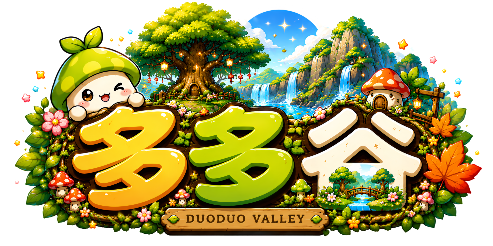
DuoDuo Valley不是只換一個版本、調一組倍率。
我們更在意：你上線之後，有沒有東西玩、有人一起玩，也有沒有值得留下來的理由。
每一個系統，都有自己的節奏。繼續往下滑，看看多多谷怎麼讓它們動起來。
重新開始，並把新的力量帶回角色。職業羈絆與遺物技能，讓每一次輪迴都有新的選擇。
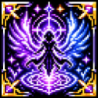
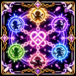
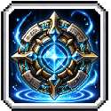
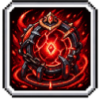
強化、裝備繼承、速洗潛能與等級同步，讓養成少一點等待，多一點成長。
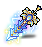
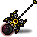
掛機、掃蕩、資源找回，讓角色繼續前進，而不是讓你每天重做同一件事。
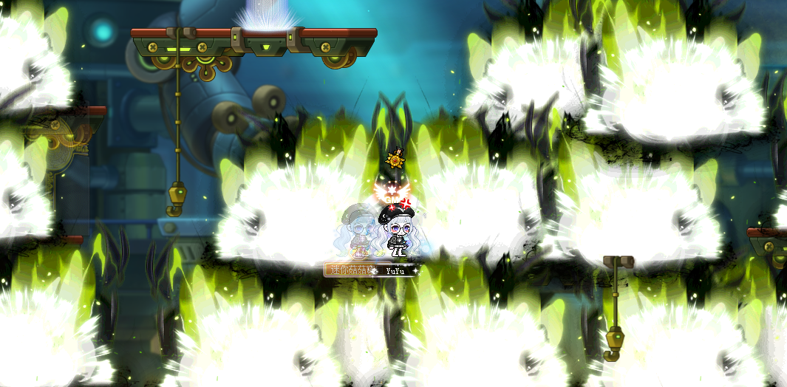
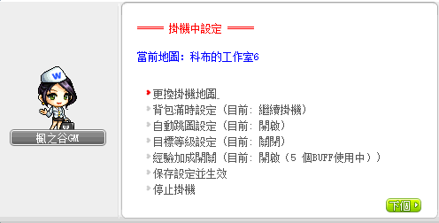
選擇陣營，讓角色的成長不只有數值，也有自己的方向。
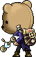
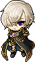
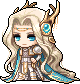
離開陣營的選擇，進入一場每次都不同的挑戰。
收藏、記錄、尋寶，也可能在某個角落遇見一位意外的旅人。
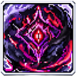
珍稀飾典COLLECT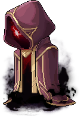
流浪商人ENCOUNTER競賽、手氣、團體活動。換一種玩法，也是一種冒險。
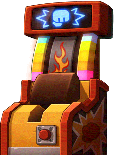
拳王爭霸賽COMPETE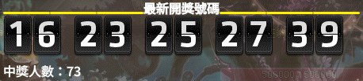
今彩539LUCK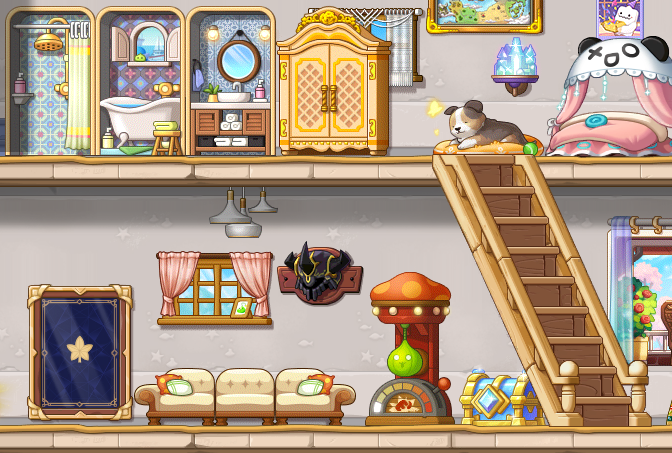
回到自己的小屋，讓冒險暫時慢下來。
準備好迎接下一個極限。
不用先研究一大堆名詞，只要 3 個步驟，就能開始你的冒險。
第一次看到多多谷，不需要先研究一堆名詞。先看看它能不能成為你想長期玩的那個服。
輪迴、陣營、強化、掛機、學院、BOSS、副本與各式特色活動，讓角色養成不只有一條路。
資源找回、掃蕩、裝備繼承、掛機等便利機制，減少重複操作，把時間留給真正想玩的內容。
打王、聊天、活動與競爭都不只是單機體驗，讓你有機會找到一起玩的玩家。
遊戲問題、BUG、活動疑問都有明確的官方處理入口，遇到問題不是只能自己摸索。
特權、活動、限定福利與各式玩家企劃會持續推出，不只一次性活動。
不用等下一個新服。版本持續更新，現在就能開始自己的進度。
多多谷不只是一個伺服器，更是一個讓大家相聚、冒險與成長的家。
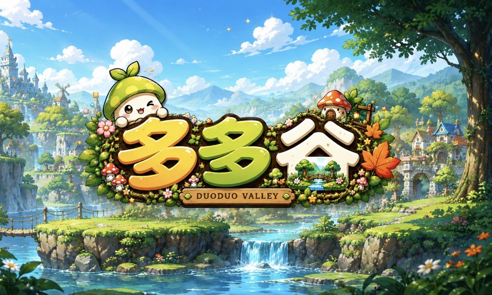
不用一次看完所有系統，先從你最有興趣的地方開始。
把系統分類給你看，想深入了解再慢慢探索。
輪迴、天賦、強化、裝備繼承等內容，讓角色成長有長期目標。
輪迴系統 · 天賦系統 · 強化系統 · 裝備繼承BOSS、副本、學院與排行榜，給想追求成長的玩家目標。
BINGO、OX、拳王爭霸、我的小屋等，練等之外也有事情做。
掛機、掃蕩、資源找回等，降低重複操作的負擔。
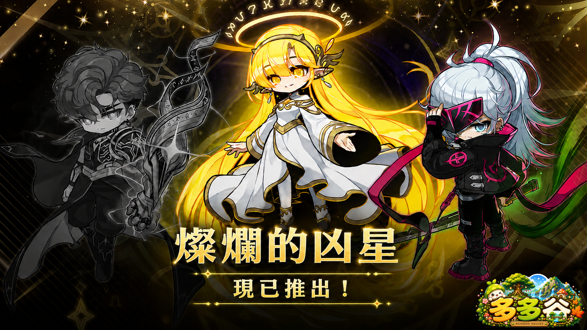
多多谷不只希望你玩遊戲，也希望你能找到一起玩的玩家。
多多谷想做的，不只是讓你下載遊戲，而是讓你有下一個想完成的目標。
系統、活動、BOSS 與副本持續整理與更新，讓角色成長之後還有新的方向。
從養成、天賦到挑戰內容，不要求所有人走同一條路，慢慢建立自己的角色。
社群、活動、打王與玩家交流，讓你留下來的理由不只是一張角色數值表。
版本不是結束，而是下一段內容的開始。
目前版本持續營運中，遊戲內容與活動資訊以官方公告為準。
輪迴、天賦、強化、活動與各式特色玩法持續整理與擴充。
定期推出活動、福利與玩家企劃，讓每個版本都有新的事情可以期待。
不用等下一個新服。如果你正在找一個有內容、有人玩、持續更新的楓之谷私服，歡迎來看看。